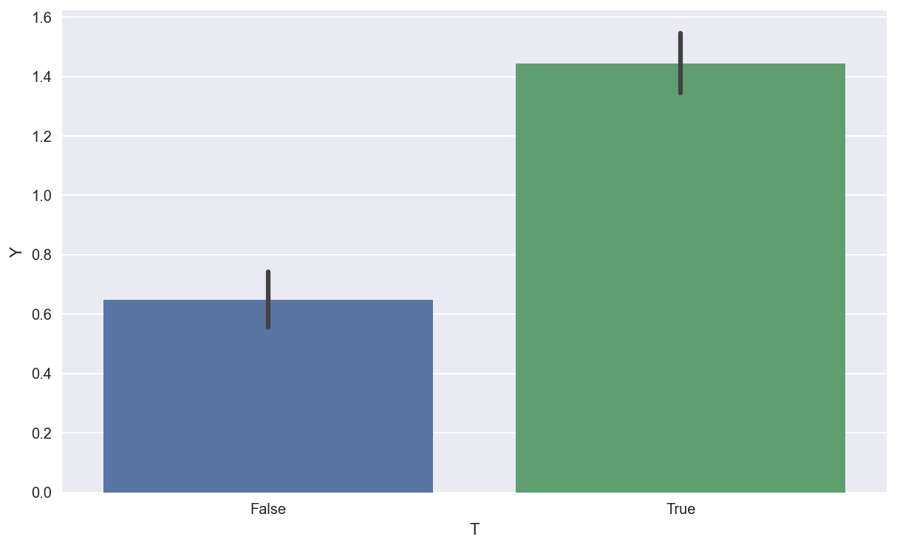
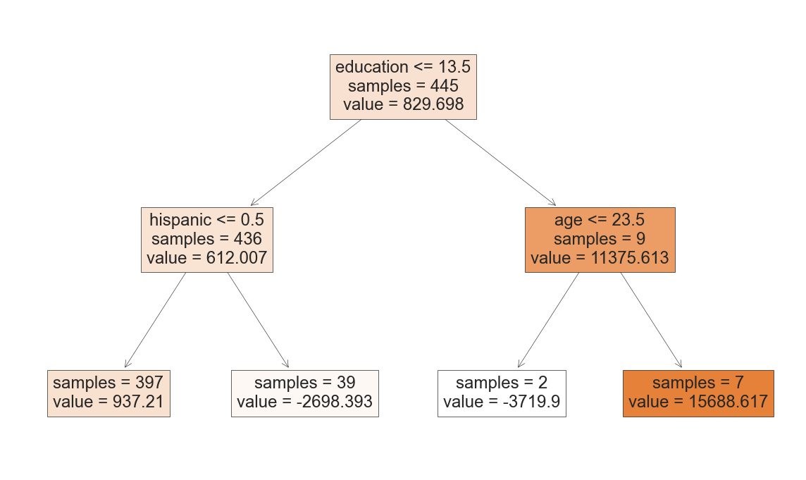

Causal Trees for Dummies

Requisites
For this tutorial, I assume you are familiar with the following concepts
- Rubin’s Potential Outcome Framework
- Decision Tree Methods
- Propensity Score Matching
Setting
We assume that for a set of i.i.d. subjects $i = 1, …, n$ we observed a tuple $(X_i, D_i, Y_i)$ comprised of
- a feature vector $X_i \in \mathbb R^n$
- a treatment assignment $D_i \in \lbrace 0, 1 \rbrace$
- a response $Y_i \in \mathbb R$
Our goal is to estimate the conditional average treatment effect
$$ \tau(x) = \mathbb E \Big [ Y^{(1)} - Y^{(0)} \ \Big| \ X = x \Big ] $$
Crucially, we only get to observe $Y_i = Y_i^{(D_i)}$.
Wihtout further assumptions, we cannot estimate $\tau(x)$.
Assumption: unconfoundedness (or ignorability, or selection on observables)
$$ \lbrace Y_i^{(1)} , Y^{(0)} \rbrace \perp W_i \ | \ X_i $$
i.e. conditional on observable characteristics the treatment assignment is as good as random.
When unconfoundedness holds, matching methods usually provide consistent estimates of the conditional average treatment effect.
Prediction Problem
How can we make the inference problem a prediciton problem?
In principle, we would like to divide the pupulation in subgroups in order to minimize the MSE of treatment effects.
The objective function is
$$ \sum_i \Big [ ( \tau_i - \hat \tau_i(X))^2 \Big ] $$
However, this objective function is unfeasible since we do not observe $\tau_i$.
The idea is to transform our outcome variable as
$$ Y_i^* = \frac{Y_i}{D_i * p(X_i) - (1-D_i) * (1-p(X_i))} $$
where $p_i$ is the propensity score of observation $i$, i.e. its probability of being treated.
It’s intuitive to verify that, given this specification, the expected value of $Y_i^*$ is the conditional average treatment effect.
Here is a proof:
$$ \begin{aligned} \mathbb E \left[ Y_i^{*} \mid X_i = x \right] &= \mathbb E \left[ \frac{Y_i}{T_i * p(X_i) - (1-T_i) * (1-p(X_i))} \ \Big | \ X_i = x \right] \newline &= \mathbb E \left[ Y_i * \frac{T_i - p(X_i)}{p(X_i) (1-p(X_i))} \ \Big | \ X_i = x \right] \newline &= \mathbb E \left[ Y_i T_i * \frac{T_i - p(X_i)}{p(X_i) (1 - p(X_i))} + Y_i (1-T_i) * \frac{T_i - p(X_i)}{p(X_i) (1 - p(X_i))} \ \Big | \ X_i = x \right] \newline &= \mathbb E \Big[ Y^{(1)}_i * \frac{D_i (1 - p(X_i))}{p(X_i) (1 - p(X_i))} \ \Big | \ X_i = x \Big] - \mathbb E \left[Y^{(0)}_i * \frac{(1 - T_i) p(X_i)}{p(X_i) (1-p(X_i))} \ \Big | \ X_i = x \right] \newline &= \frac{1}{p(X_i)} \mathbb E \Big[ Y^{(1)}_i * T_i \ \Big | \ X_i = x \Big] - \frac{1}{1-p(X_i)} \mathbb E \left[ Y^{(0)}_i * (1 - T_i) \ \Big | \ X_i = x \right] \newline &= \frac{1}{p(X_i)} \mathbb E \left[ Y^{(1)}_i \ \Big | \ X_i = x \right] * \mathbb E \Big[ T_i \ \Big | \ X_i = x \Big] - \frac{1}{1 - p(X_i)} \mathbb E \left[ Y^{(0)}_i \ \Big | \ X_i = x \right] * \mathbb E \left[ (1 - T_i) \ \Big | \ X_i = x \right] \newline &= \mathbb E \Big[ Y^{(1)}_i \ \Big | \ X_i = x \Big] - \mathbb E \Big[Y^{(0)}_i \ \Big | \ X_i = x \Big] \newline &= \tau_i(x) \end{aligned} $$
How can regression trees help estimate heterogeneous treatment effects?
If we fit a tree model on the modified outcome $Y^*$, we will get a partition of the data that minimizes the expected mean squared error of the conditional treatment effect. While the individual estimates are going to be inaccurate, within each leaf, we can estimate heteterogeneous treatment effects.
In order to get an unbiased estimate however, we need to use different data to build the tree and to estimate the effect. This procedure comes at the cost of increased variance.
Example 1: Simulated Data
Let’s start with an example on synthetic data. We have the following individual characteristics:
male: genderblack: raceage: ageeduc: education, which depends on age and race
Moreover, we maketreatment status D depend on both gender and race so that it will be important to condition on observables.
Our outcome variable y depends on the treatment assignment differently according to education and age.
%matplotlib inline
%config InlineBackend.figure_format = 'retina'
from src.utils import *
from src.dgp import dgp1
We generate a dataset out of our DGP.
dgp = dgp1()
df = dgp.generate_data()
df.head()
| male | black | age | educ | T | Y | |
|---|---|---|---|---|---|---|
| 0 | 0 | 0 | 55.0 | 1 | True | -0.556665 |
| 1 | 1 | 1 | 47.0 | 4 | True | -0.329725 |
| 2 | 0 | 1 | 31.0 | 3 | False | -0.150055 |
| 3 | 0 | 1 | 51.0 | 7 | False | 0.011573 |
| 4 | 0 | 0 | 48.0 | 7 | False | 0.421084 |
We can check the distribution of variables across treatment assignment.
df.groupby('T').agg(['mean', 'std']).T.unstack(1)
| T | False | True | ||
|---|---|---|---|---|
| mean | std | mean | std | |
| male | 0.432127 | 0.495933 | 0.564516 | 0.496265 |
| black | 0.570136 | 0.495618 | 0.496416 | 0.500436 |
| age | 44.794118 | 10.186277 | 44.756272 | 10.138259 |
| educ | 5.409502 | 2.381371 | 5.449821 | 2.390171 |
| Y | 0.648196 | 1.030889 | 1.443246 | 1.153021 |
As we can see, male and black are now balanced across groups.
We can get a first estimate of the average treatment effect as a simple comparison of means.
df.loc[df['T']==1, 'Y'].mean() - df.loc[df['T']==0, 'Y'].mean()
0.795050419702685
We can visualize the difference with a barplot.
sns.barplot(x='T', y='Y', data=df);

It seems there is a significant difference between the two groups. We can get a standard error around the estimate by regressing $Y$ on $D$.
est = smf.ols('Y ~ T', df).fit()
est.summary().tables[1]
| coef | std err | t | P>|t| | [0.025 | 0.975] | |
|---|---|---|---|---|---|---|
| Intercept | 0.6482 | 0.052 | 12.381 | 0.000 | 0.545 | 0.751 |
| T[T.True] | 0.7951 | 0.070 | 11.343 | 0.000 | 0.658 | 0.933 |
The coefficient is statistically significant. However, we know that the treatment assignment is not unconditionally exogenous. We need to condition on observables $X$.
est = smf.ols('Y ~ T +' + ' + '.join(dgp.X), df).fit()
est.summary().tables[1]
| coef | std err | t | P>|t| | [0.025 | 0.975] | |
|---|---|---|---|---|---|---|
| Intercept | 0.2096 | 0.171 | 1.226 | 0.220 | -0.126 | 0.545 |
| T[T.True] | 0.7663 | 0.065 | 11.808 | 0.000 | 0.639 | 0.894 |
| male | 0.5143 | 0.064 | 7.997 | 0.000 | 0.388 | 0.641 |
| black | 0.5747 | 0.065 | 8.813 | 0.000 | 0.447 | 0.703 |
| age | -0.0102 | 0.003 | -3.261 | 0.001 | -0.016 | -0.004 |
| educ | 0.0642 | 0.014 | 4.715 | 0.000 | 0.037 | 0.091 |
We do not need to actually condition on the full vector of observables $X$. It is sufficient to condition on the propensity score $p(X)$, i.e. the conditional probability of treatment.
We can estimate the propensity score with any method we want. The more flexible, the better.
df['pscore'] = RandomForestRegressor().fit(df[dgp.X], df['T']).predict(df[dgp.X])
df['pscore'].head()
0 0.770000
1 0.568000
2 0.040000
3 0.106333
4 0.230000
Name: pscore, dtype: float64
We now estiamte the conditional average treatment effect regressing $Y$ on $D$ and on the p-score.
est = smf.ols('Y ~ T + pscore', df).fit()
est.summary().tables[1]
| coef | std err | t | P>|t| | [0.025 | 0.975] | |
|---|---|---|---|---|---|---|
| Intercept | 0.6500 | 0.071 | 9.106 | 0.000 | 0.510 | 0.790 |
| T[T.True] | 0.7988 | 0.121 | 6.606 | 0.000 | 0.561 | 1.036 |
| pscore | -0.0070 | 0.187 | -0.038 | 0.970 | -0.374 | 0.360 |
We are now ready to estimate heterogeneous treatment effects. First, we need to compute the transformed outcome
$$ Y_i^* = \frac{Y_i}{D_i * p_i - (1-D_i) * (1-p_i)} $$
df['y_star'] = df['Y'] /(df['T'] * df['pscore'] - (1-df['T']) * (1-df['pscore']))
Now we train a small tree on the transformed outcome $Y^*$.
tree = DecisionTreeRegressor(max_depth=2, min_samples_leaf=30).fit(df[dgp.X], df['y_star'])
df['y_hat'] = tree.predict(df[dgp.X])
We can plot the tree and visualize the estimated groups and treatment effects.
# Plot tree
fig, ax = plt.subplots(1,1, figsize=(10, 6))
plot_tree(tree, filled=True, fontsize=12, feature_names=dgp.X, impurity=False, ax=ax);
We still have one issue: we have trained our tree model and estimated the treatment effects using the same data. This introduces bias in the estimates.
Example 2: Lalonde Data
For this tutorial, we are goind to use the data from Lalonde (1981). You can find the data here: https://users.nber.org/~rdehejia/nswdata.html
df = pd.read_stata('http://www.nber.org/~rdehejia/data/nsw_dw.dta').drop(columns=['data_id'])
df.head()
| treat | age | education | black | hispanic | married | nodegree | re74 | re75 | re78 | |
|---|---|---|---|---|---|---|---|---|---|---|
| 0 | 1.0 | 37.0 | 11.0 | 1.0 | 0.0 | 1.0 | 1.0 | 0.0 | 0.0 | 9930.045898 |
| 1 | 1.0 | 22.0 | 9.0 | 0.0 | 1.0 | 0.0 | 1.0 | 0.0 | 0.0 | 3595.894043 |
| 2 | 1.0 | 30.0 | 12.0 | 1.0 | 0.0 | 0.0 | 0.0 | 0.0 | 0.0 | 24909.449219 |
| 3 | 1.0 | 27.0 | 11.0 | 1.0 | 0.0 | 0.0 | 1.0 | 0.0 | 0.0 | 7506.145996 |
| 4 | 1.0 | 33.0 | 8.0 | 1.0 | 0.0 | 0.0 | 1.0 | 0.0 | 0.0 | 289.789886 |
This dataset contains information about earnings for
df.head()
| treat | age | education | black | hispanic | married | nodegree | re74 | re75 | re78 | |
|---|---|---|---|---|---|---|---|---|---|---|
| 0 | 1.0 | 37.0 | 11.0 | 1.0 | 0.0 | 1.0 | 1.0 | 0.0 | 0.0 | 9930.045898 |
| 1 | 1.0 | 22.0 | 9.0 | 0.0 | 1.0 | 0.0 | 1.0 | 0.0 | 0.0 | 3595.894043 |
| 2 | 1.0 | 30.0 | 12.0 | 1.0 | 0.0 | 0.0 | 0.0 | 0.0 | 0.0 | 24909.449219 |
| 3 | 1.0 | 27.0 | 11.0 | 1.0 | 0.0 | 0.0 | 1.0 | 0.0 | 0.0 | 7506.145996 |
| 4 | 1.0 | 33.0 | 8.0 | 1.0 | 0.0 | 0.0 | 1.0 | 0.0 | 0.0 | 289.789886 |
We can summarize each variable by its treatment status.
df.groupby('treat').agg(['mean', 'std']).T.unstack(1)
| treat | 0.0 | 1.0 | ||
|---|---|---|---|---|
| mean | std | mean | std | |
| age | 25.053846 | 7.057745 | 25.816216 | 7.155019 |
| education | 10.088462 | 1.614325 | 10.345946 | 2.010650 |
| black | 0.826923 | 0.379043 | 0.843243 | 0.364558 |
| hispanic | 0.107692 | 0.310589 | 0.059459 | 0.237124 |
| married | 0.153846 | 0.361497 | 0.189189 | 0.392722 |
| nodegree | 0.834615 | 0.372244 | 0.708108 | 0.455867 |
| re74 | 2107.026611 | 5687.905639 | 2095.573730 | 4886.620354 |
| re75 | 1266.909058 | 3102.982088 | 1532.055298 | 3219.250879 |
| re78 | 4554.801270 | 5483.836001 | 6349.143555 | 7867.402183 |
y = 're78'
D = 'treat'
est = smf.ols('re78 ~ treat', df).fit()
est.summary().tables[1]
| coef | std err | t | P>|t| | [0.025 | 0.975] | |
|---|---|---|---|---|---|---|
| Intercept | 4554.8011 | 408.046 | 11.162 | 0.000 | 3752.855 | 5356.747 |
| treat | 1794.3424 | 632.853 | 2.835 | 0.005 | 550.574 | 3038.110 |
X = ['age', 'education', 'black', 'hispanic', 'married', 'nodegree']
est = smf.ols('re78 ~ treat +' + ' + '.join(X), df).fit()
est.summary().tables[1]
| coef | std err | t | P>|t| | [0.025 | 0.975] | |
|---|---|---|---|---|---|---|
| Intercept | 1168.0034 | 3360.588 | 0.348 | 0.728 | -5436.922 | 7772.928 |
| treat | 1671.1304 | 637.973 | 2.619 | 0.009 | 417.254 | 2925.007 |
| age | 52.8219 | 45.255 | 1.167 | 0.244 | -36.123 | 141.767 |
| education | 393.8213 | 227.114 | 1.734 | 0.084 | -52.549 | 840.192 |
| black | -2220.2622 | 1168.317 | -1.900 | 0.058 | -4516.480 | 75.956 |
| hispanic | 83.7193 | 1550.348 | 0.054 | 0.957 | -2963.346 | 3130.785 |
| married | 158.2084 | 850.326 | 0.186 | 0.852 | -1513.029 | 1829.446 |
| nodegree | -128.2203 | 995.416 | -0.129 | 0.898 | -2084.617 | 1828.177 |
df['pscore'] = RandomForestRegressor().fit(df[X], df[D]).predict(df[X])
df['pscore'].head()
0 0.770000
1 0.755667
2 0.535976
3 0.653974
4 0.730000
Name: pscore, dtype: float64
est = smf.ols('re78 ~ treat + pscore', df).fit()
est.summary().tables[1]
| coef | std err | t | P>|t| | [0.025 | 0.975] | |
|---|---|---|---|---|---|---|
| Intercept | 4417.5436 | 586.691 | 7.530 | 0.000 | 3264.493 | 5570.594 |
| treat | 1602.3526 | 865.065 | 1.852 | 0.065 | -97.799 | 3302.504 |
| pscore | 519.6742 | 1594.531 | 0.326 | 0.745 | -2614.131 | 3653.479 |
Estimate CATE
df['d'] = df['treat'] * df['pscore'] - (1-df['treat']) * (1-df['pscore'])
df['y_star'] = df['re78'] / df['d']
tree = DecisionTreeRegressor(max_depth=2).fit(df[X], df['y_star'])
df['y_hat'] = tree.predict(df[X])
# Plot tree
fig, ax = plt.subplots(1,1, figsize=(10, 6))
plot_tree(tree, filled=True, fontsize=12, feature_names=X, ax=ax, impurity=False);

df['y_hat'].mean()
829.6982690090036
References
- Original paper: Recursive partitioning for heterogeneous causal effects (2016) by Athey and Imbens
- Video lecture by Prof. Susan Athey (Stanford)